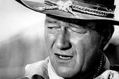

The Bridge: Adverbials
| determinedly jogging down the road |
On most initial training courses, the term adverb will have been discussed and on some, the term adverbial may have been mentioned. The usual outcome is that graduates of such courses remain slightly unsure about the difference so we'll start with some simple definitions:
- An adverb is a member of an open word class (like noun, verb,
adjective etc., meaning that we can invent new ones) which
usually modifies a verb, another adverb or an adjective
(although some can modify other items such as prepositional
phrases). They provide more information about the situation or
event. Here are some
examples:
She arrived yesterday
She was very careful
They did the work extremely thoroughly
I went upstairs
The car broke down
He jogged frequently
He carefully opened the envelope
Stupidly, I forgot my keys
I am dead against the idea - An adverbial is any
word or phrase which modifies the meaning of a verb or verb
phrase. Here are some
examples of adverbials which are
not
adverbs:
She arrived the day before yesterday
I was going up the stairs
She had spoken in Italian
The car drove over his foot
He jogged most mornings
She arrived in a foul temper
He opened the envelope because he wanted to read the letter
Last night I watched television
Despite the rain I went for a walk
In general, that's a useful idea
Briefly, then:
- all adverbs can act as adverbials but not all adverbials are adverbs.
- adverbs have multiple functions, modifying verbs, adjectives and other adverbs but adverbials only modify verbs and verb phrases.
- many adverbs end in -ly but many do not so we cannot know by looking at a word whether it is an adverb or not. We have to see what it does, not what it looks like.
- many adverbials consist of phrases or clauses but adverbs are usually single words or combinations of two or more adverbs.
 |
To make sure you have this clear before we go on, try a short matching test. |
In that little test, there were two items which were neither
adverbs nor adverbials. They were:
They hammered it flat
which is actually an adjective. Although it looks like it is
modifying the verb, it is actually modifying the pronoun it.
It refers to what it will look like when the hammering is
finished.
It was a
timely interruption
in which the word is actually an adjective modifying the noun
interruption, although, because it ends in -ly, it
looks like an adverb. There are plenty of adjectives in
English which end in -ly and look like adverbs but aren't.
Other examples include:
brotherly, costly, early, friendly, ghastly, leisurely, lively,
lonely, motherly, silly and more.
Beware.
 |
Commonalities and differences |
Because adverbs and adverbials do similar jobs in the language they resemble each other in many ways but there are also key differences.
- Most adverbs can take any of three positions:
Initial:
Obviously, she was working
Mid or medial:
She was obviously working
Final:
She was working, obviously
Most other adverbials come either in initial or final position:
In the morning she was working
She was working in the morning
but not:
*She in the morning was working - Some adverbs can be particles combining with verbs to make a
new meaning (a phrasal verb) so, for example:
The verb look can combine with the adverb up to make:
She looked the word up
but other adverbials don't do this so, although we can have:
She looked at the word
we cannot have:
*She looked the word at
because the phrase at the word is an adverbial prepositional phrase telling us something more about the verb look. - Adverbs and adverbials can do the same sorts of job in a
sentence and can express:
- Place:
He arrived here
She arrived in the office - Manner:
The did it well
They did it with great skill - Time:
She came early
She came before lunch - Frequency (a sub-set of time adverbials)
The often argued
They argued all the time - Degree:
They argued loudly
They argued in loud voices
- Place:
- Because adverbs constitute a word class in their own right,
they can only be adverbs (obviously).
However, adverbials are not a word class, they are a way of modifying verbs, and they are much more flexible. They can be:- Adverbs:
She came here - Prepositional phrases:
They went over the road - Clauses:
I came so I could help - Noun phrases:
She worked most days - Infinitives:
I play to win
- Adverbs:
 |
Three things adverbials do |
There is a good deal more on this area in the in-service guide to adverbials (linked below) and that guide has links to the three areas considered more in detail. Here, we will quickly summarise the three grammatical roles that adverbials (including adverbs) usually play.
 |
Role 1: modifying the verb as part of the clause |
These are called adjuncts and are the most common grammatical
role of adverbials. They form part of the clause in which they
appear and serve only to provide more information about the event or
situation. For example:
She opened the book
again
They came into the garden
I stayed home in the
evening
They frequently
go to the cinema
etc.
 |
Role 2: modifying the rest of the clause |
These are called disjuncts or, sometimes, sentence adverbials, and often come in initial or end
position (but don't have to). They can be called sentence
adverbials because they modify not just the verb but the whole of
the clause with which they are connected. For example:
Obviously,
the weather was too awful to consider going for a walk
That's a very silly thing to say
in my opinion
Money, it seems,
will be in short supply
Politically,
that's not a good idea
|  |
Role 3: connecting clauses |
These are called conjuncts (and should not be confused with
conjunctions). They act to link clauses together and,
therefore, usually occur in the initial position of the second
clause or sentence but can occur in
medial and end position, too. For example:
The train was late.
Consequently, I missed the start of the
meeting
She lost her keys and
therefore borrowed mine
She was persuasive.
However, the meeting was still not convinced.
We have to go now,
otherwise, we'll miss the train
It was expensive. It was,
however, well done
She had very little money. She dressed expensively,
nevertheless.
This has been a short guide, for more, much more, you can consult the guides in these links which also contain links to other connected areas.

| Guides in other areas | |
| Initial plus essential guides | In-service guides |
| adverb essentials | adverbials |
| adverbials essentials | adverbs |
| word class essentials | prepositional phrases |